Run: privacy_hopqa_qwen3_8b_async_v2
This viewer summarizes `privacy_hopqa` runtime behavior from saved rollout traces, token logs, and sampled artifacts. It mirrors the older privacy-agent viewer more closely, but keeps the hop-specific diagnostics and representative trace viewers at the bottom.
Loop: `hop_plan` picks up to 4 searches, retrieval runs, `doc_choose` selects up to 3 docs, `doc_read` inspects them, `hop_resolve` decides whether the current hop is answered, and the loop repeats until the chain is resolved or the budget is exhausted.
These are the quickest plots to check for throughput shape, rollout duration, and how much search fanout is happening before document reading.
Completed rollout time across the sampled run. This is the fastest overall throughput sanity check.
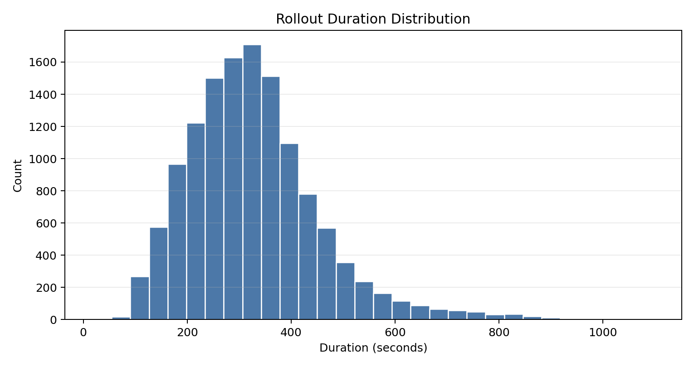
How many search-resolve loops the agent needed before terminating each rollout.
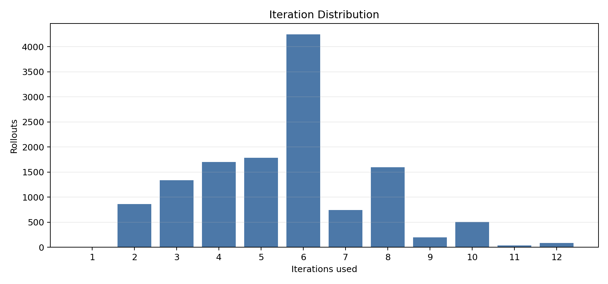
Total number of `hop_plan`, `doc_choose`, `doc_read`, and `hop_resolve` calls per rollout.
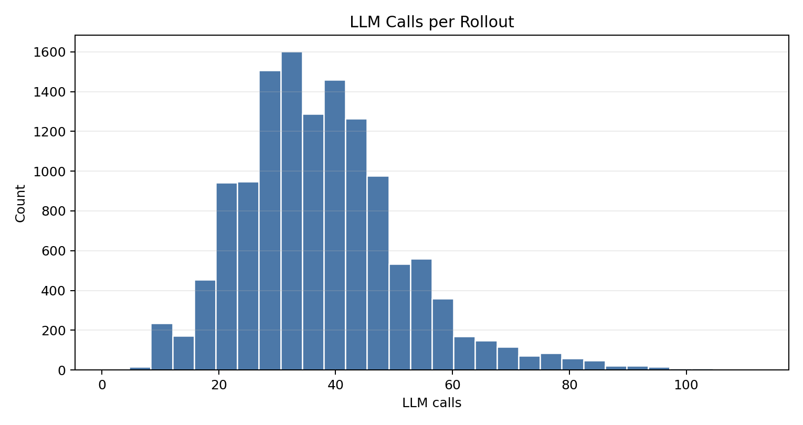
Search fanout versus how many candidate docs were actually selected for close reading.
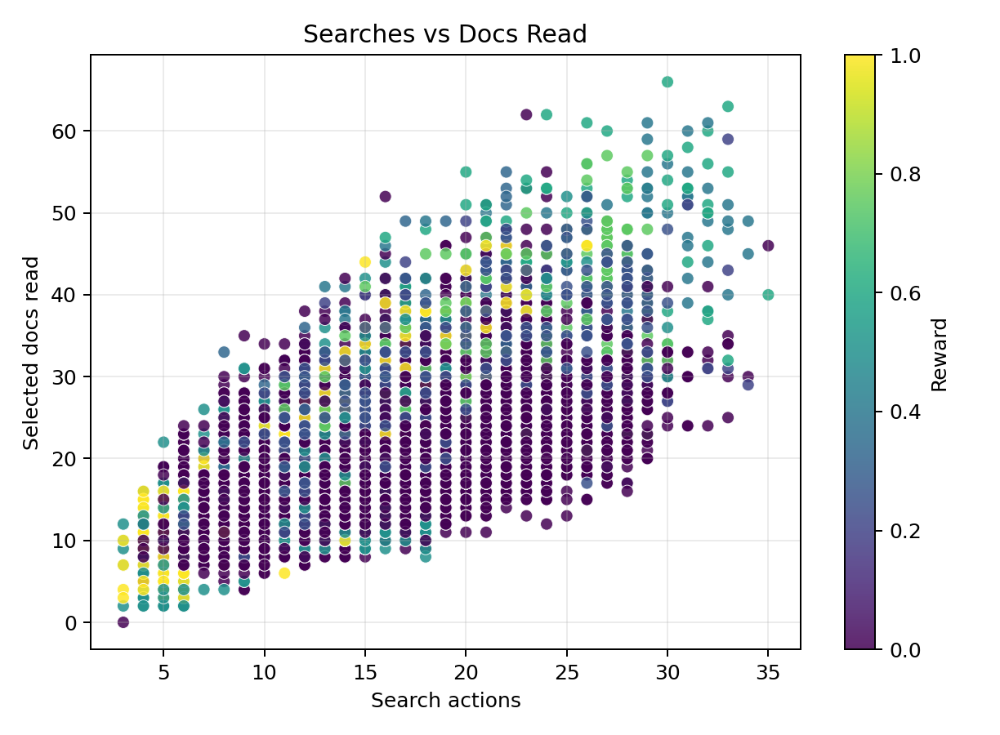
Four pairings of local/web hop counts against local/web search counts. This makes it obvious when the agent is using the wrong source for a chain.
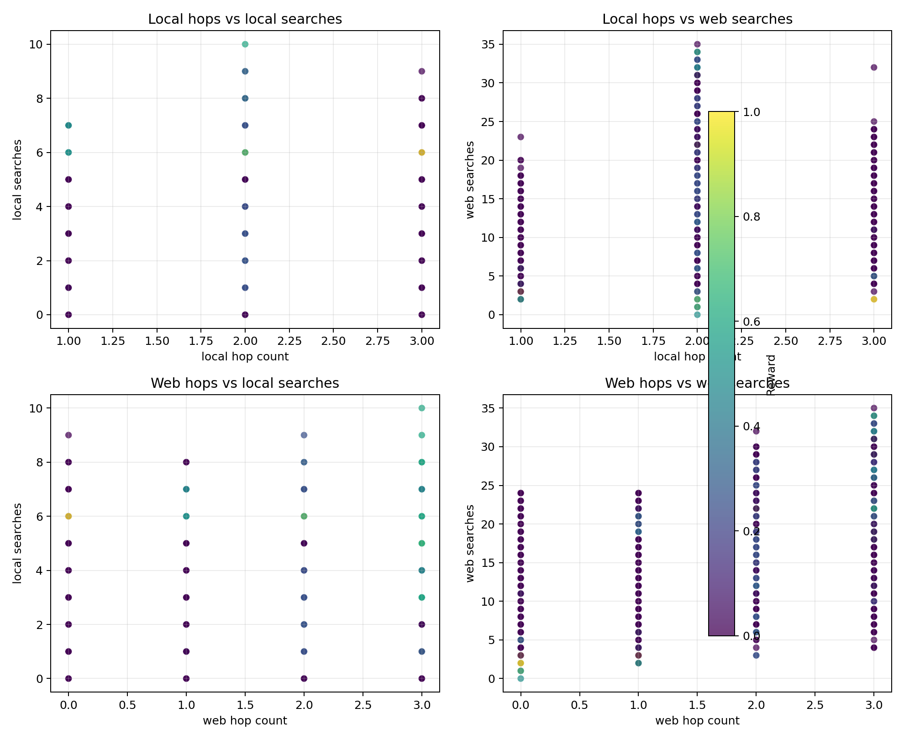
Overlaid per-rollout distributions for web vs local searches and web vs local document reads.
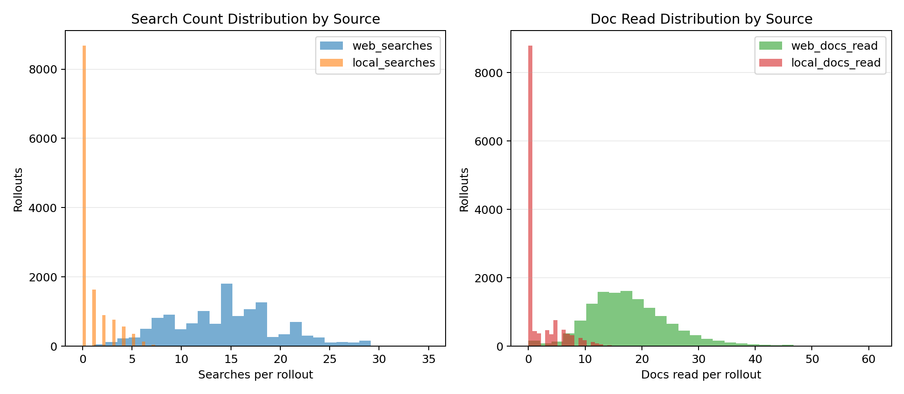
This section is usually the most useful for explaining why the run feels slow. It focuses on stage latency and how extra iterations add wall time and token usage.
Completed rollout time split by how many iterations the hop-QA loop ended up using.
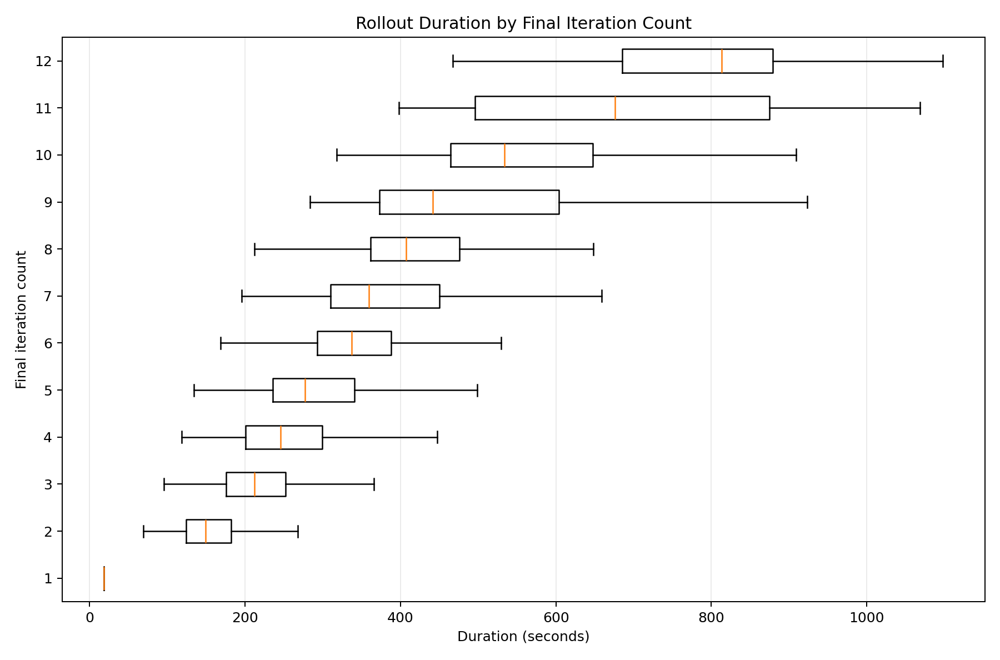
Per-stage wall time distribution. This is the fastest way to see whether planning, choosing, reading, or resolving is dominating.
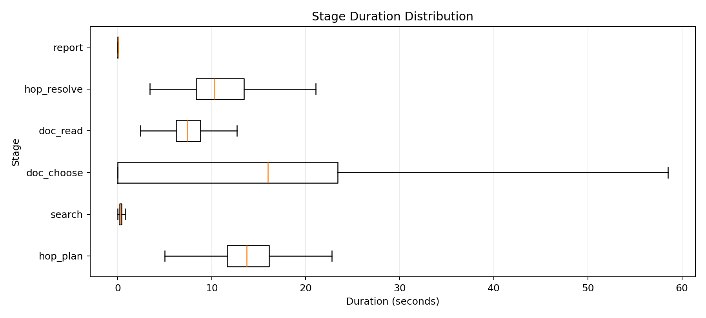
Aggregate prompt plus output token volume split by the final number of iterations.
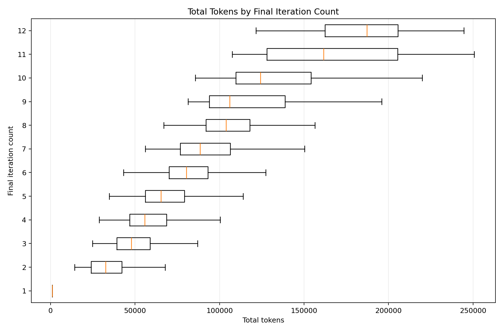
These views use the explicit `privacy_hopqa llm call summary` lines emitted by the async rollout adapter. They help separate prompt-heavy from generation-heavy stages.
Prompt-side token distribution by `hop_plan`, `doc_choose`, `doc_read`, and `hop_resolve`.
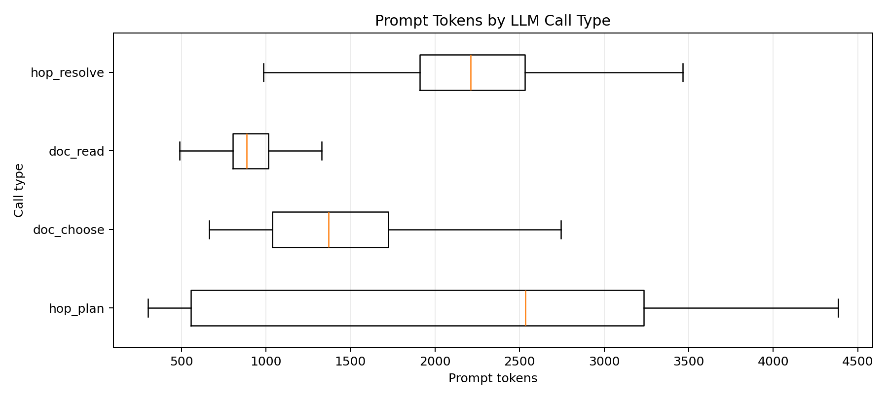
Response-token distribution by LLM call type. This is the quickest read on generation-heavy stages.
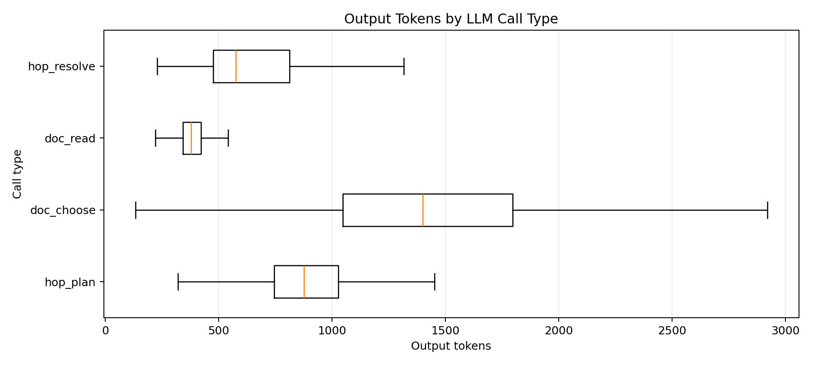
Combined prompt plus response token distribution by call type.
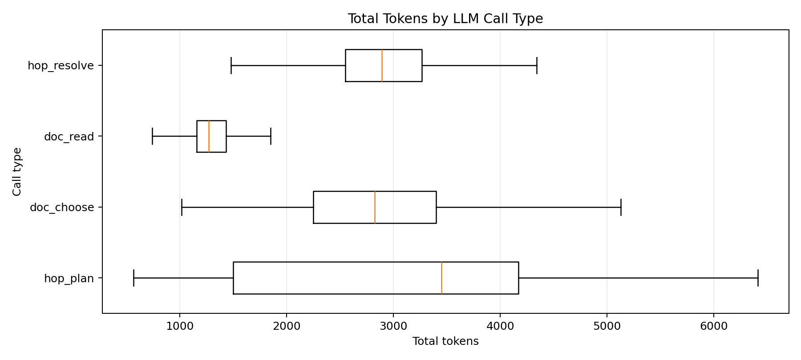
Total LLM token volume per rollout across the full hop chain.
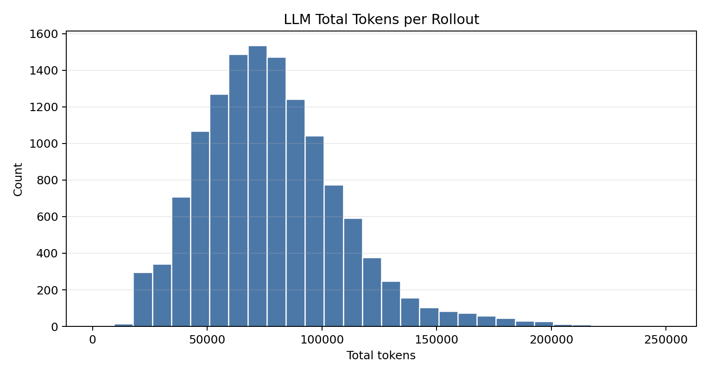
These views recompute reward from the saved report answers against the dataset ground truth, then show representative sampled reports and artifacts for manual inspection.
Reward counts recomputed from saved reports and dataset ground truth.
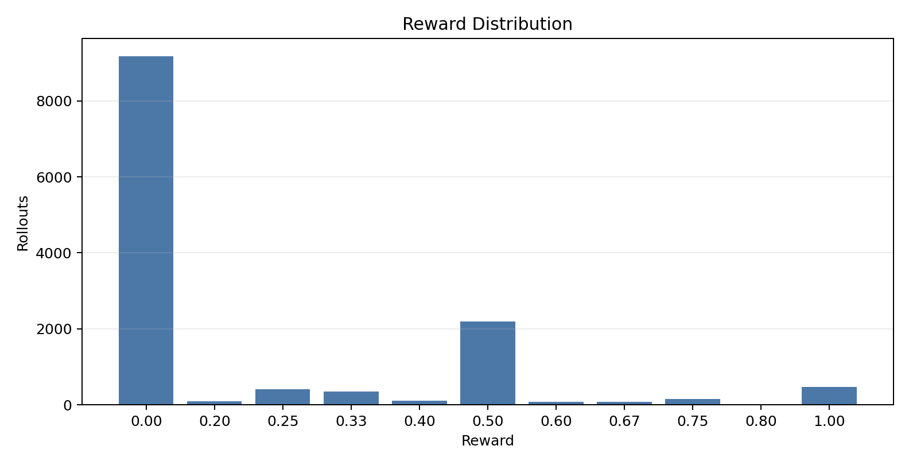
Reward split by hop-type pattern like `LLL` or mixed local/web chains.
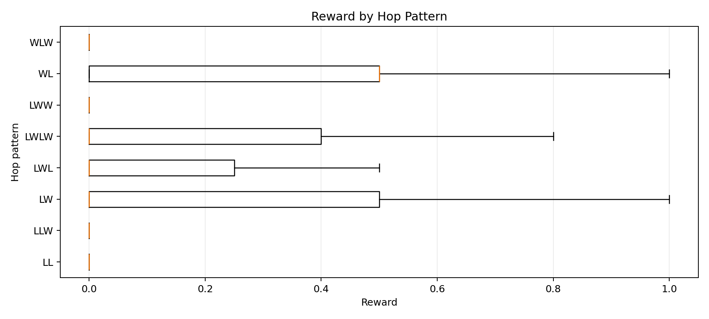
Percent of first hops, second hops, and later hops solved correctly.
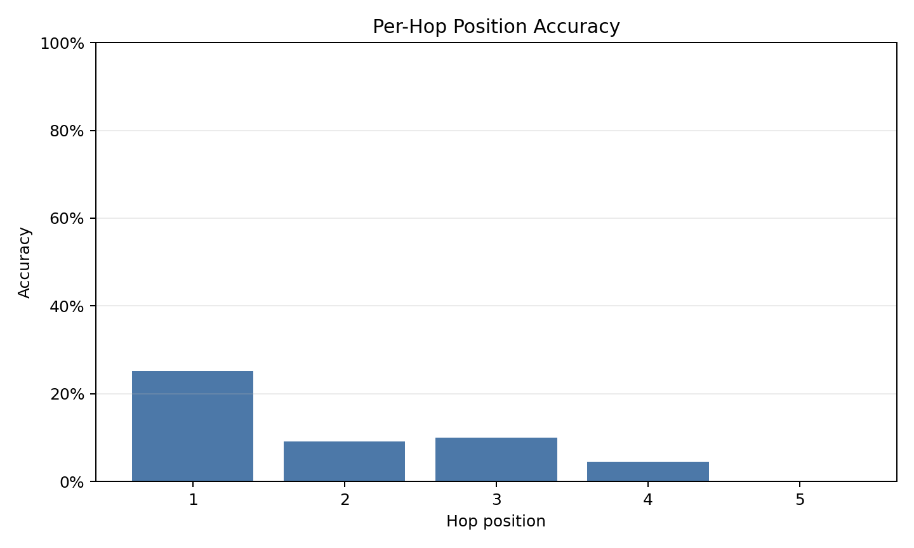
| Hop | Accuracy | Solved / Total |
|---|---|---|
| 1 | 25.1% | 3290 / 13096 |
| 2 | 9.1% | 1191 / 13096 |
| 3 | 9.9% | 653 / 6568 |
| 4 | 4.5% | 116 / 2588 |
| 5 | 0.0% | 0 / 657 |
correct_hops / total_hops.hop_plan, doc_choose, and hop_resolve are trained; doc_read is not.group_id and rollout_index, so the viewer cannot reconstruct an exact per-group leave-one-out table after the fact.| Rollout | Task | Chain | Pattern | Hops | Reward | Predicted Final | Gold Final | Artifacts |
|---|---|---|---|---|---|---|---|---|
| DR0026_d18b5fb4_49d24618 | DR0026 | d18b5fb4 | WL | 2 | 0.000 | NOT_FOUND | June 2024 | report timeline trace events |
| DR0066_52aa017a_22a85fc8 | DR0066 | 52aa017a | LL | 3 | 0.000 | Unable to determine the sender of the email. | Amanda Lee | report timeline trace events |
| DR0069_bfdc5147_32de67bd | DR0069 | bfdc5147 | LWL | 4 | 0.000 | NOT_FOUND | 70 kWh | report timeline trace events |
| DR0070_12adda33_b1a08e19 | DR0070 | 12adda33 | LWLW | 5 | 0.000 | NOT_FOUND | Jason Mittell | report timeline trace events |
| DR0098_d02e9696_1b4bb1b2 | DR0098 | d02e9696 | LWL | 4 | 0.250 | NOT_FOUND | report timeline trace events | |
| DR0013_d4ae8bf9_921b1c5c | DR0013 | d4ae8bf9 | LWL | 3 | 0.333 | NOT_FOUND | 40% | report timeline trace events |
| DR0070_12adda33_176f4306 | DR0070 | 12adda33 | LWLW | 5 | 0.400 | NOT_FOUND | Jason Mittell | report timeline trace events |
| DR0079_944ef838_9d042414 | DR0079 | 944ef838 | WL | 2 | 0.500 | NOT_FOUND | 15% | report timeline trace events |
| DR0081_27c6cb7b_c04ac886 | DR0081 | 27c6cb7b | WL | 2 | 0.500 | NOT_FOUND | 20% | report timeline trace events |
| DR0044_8f4ff10c_dd82405a | DR0044 | 8f4ff10c | LW | 2 | 1.000 | Nintendo | Nintendo | report timeline trace events |
| DR0013_d4ae8bf9_e3acdfaf | DR0013 | d4ae8bf9 | LWL | 3 | 1.000 | 40% | 40% | report timeline trace events |
| DR0091_01ff9e71_1aea9c36 | DR0091 | 01ff9e71 | LWL | 4 | 1.000 | Q3 2020 | Q3 2020 | report timeline trace events |
Parse-error rate is normalized by the number of LLM calls at that stage, so it reflects how often the stage fails when it actually has a chance to fail.
Parse failures normalized by the number of times that stage could have failed.
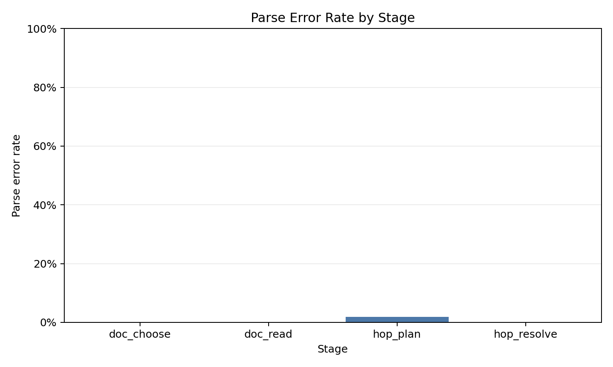
Absolute error volume by stage, split into parse errors, context overflows, and other failures.
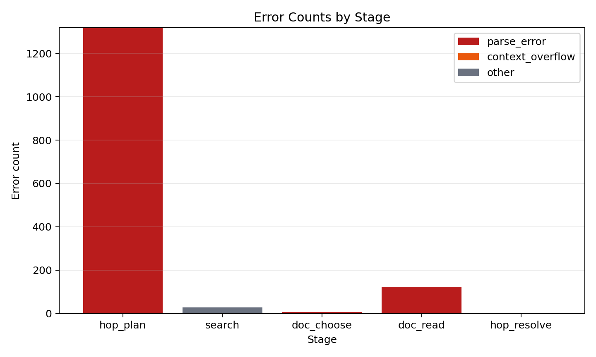
| Stage | Parse Errors | Attempts | Rate |
|---|---|---|---|
| hop_plan | 1318 | 73737 | 1.79% |
| doc_choose | 7 | 45418 | 0.02% |
| doc_read | 124 | 264598 | 0.05% |
| hop_resolve | 1 | 113635 | 0.00% |
| Call Type | Calls | Median Prompt | Median Output | Median Total | Mean Total |
|---|---|---|---|---|---|
| hop_plan | 73737 | 2534.0 | 876.0 | 3448.0 | 3008.6 |
| doc_choose | 45418 | 1370.0 | 1401.0 | 2826.0 | 2863.6 |
| doc_read | 264598 | 886.0 | 378.0 | 1272.0 | 1322.3 |
| hop_resolve | 113635 | 2212.0 | 576.0 | 2891.0 | 2936.0 |
| Metric | Value |
|---|---|
| Rollouts | 13096 |
| Mean reward | 0.157 |
| Solved fraction | 3.6% |
| Completed rollouts / s | 0.383 |
| Parse errors | 1450 |
| Parse error rate | 0.29% |
| Context overflows | 0 |
| Metric | Value |
|---|---|
| No-web-hop rollouts with web searches | 100.0% |
| No-local-hop rollouts with local searches | 0.0% |
| Mean web searches / rollout | 14.386 |
| Mean local searches / rollout | 0.846 |
| Mean web docs read / rollout | 18.184 |
| Mean local docs read / rollout | 1.819 |
| Statistic | Reward |
|---|---|
| count | 13096.000 |
| mean | 0.157 |
| median | 0.000 |
| min | 0.000 |
| p90 | 0.500 |
| p95 | 0.667 |
| max | 1.000 |
| Statistic | Seconds |
|---|---|
| count | 13096.000 |
| mean | 328.120 |
| median | 314.378 |
| min | 18.558 |
| p90 | 482.403 |
| p95 | 559.667 |
| max | 1098.059 |
| Statistic | Calls |
|---|---|
| count | 13096.000 |
| mean | 37.623 |
| median | 36.000 |
| min | 1.000 |
| p90 | 55.000 |
| p95 | 63.000 |
| max | 112.000 |
| Rollout | Pattern | Reward | Iters | Searches | Docs | Parse Err | Ctx Oflow | Duration (s) | Artifacts |
|---|---|---|---|---|---|---|---|---|---|
| DR0091_01ff9e71_1195acfc | LWL | 1.000 | 9 | 24 | 46 | 0 | 0 | 802.551 | report timeline trace |
| DR0091_01ff9e71_dab35730 | LWL | 1.000 | 10 | 26 | 46 | 0 | 0 | 775.297 | report timeline trace |
| DR0091_01ff9e71_1a9f8cb3 | LWL | 1.000 | 8 | 22 | 46 | 0 | 0 | 773.846 | report timeline trace |
| DR0091_01ff9e71_1cd56da1 | LWL | 1.000 | 8 | 22 | 45 | 0 | 0 | 762.257 | report timeline trace |
| DR0091_01ff9e71_c888d447 | LWL | 1.000 | 8 | 21 | 46 | 0 | 0 | 730.198 | report timeline trace |
| DR0091_01ff9e71_2fe89095 | LWL | 1.000 | 10 | 26 | 46 | 0 | 0 | 720.628 | report timeline trace |
| DR0091_01ff9e71_63f8f90e | LWL | 1.000 | 9 | 22 | 39 | 0 | 0 | 712.082 | report timeline trace |
| DR0091_01ff9e71_8a3d1769 | LWL | 1.000 | 8 | 20 | 35 | 0 | 0 | 640.734 | report timeline trace |
| DR0091_01ff9e71_7fd5040d | LWL | 1.000 | 6 | 16 | 36 | 0 | 0 | 639.762 | report timeline trace |
| DR0091_01ff9e71_09908ca8 | LWL | 1.000 | 8 | 23 | 40 | 0 | 0 | 629.749 | report timeline trace |
| DR0091_01ff9e71_706254f9 | LWL | 1.000 | 8 | 21 | 36 | 0 | 0 | 608.322 | report timeline trace |
| DR0091_01ff9e71_a3cc8605 | LWL | 1.000 | 7 | 20 | 30 | 0 | 0 | 592.789 | report timeline trace |
| DR0091_01ff9e71_7b5a0486 | LWL | 1.000 | 8 | 21 | 38 | 0 | 0 | 592.471 | report timeline trace |
| DR0091_01ff9e71_f1aa9c26 | LWL | 1.000 | 10 | 27 | 36 | 0 | 0 | 589.481 | report timeline trace |
| DR0091_01ff9e71_50e331af | LWL | 1.000 | 8 | 22 | 33 | 0 | 0 | 585.491 | report timeline trace |
| DR0091_01ff9e71_1bcf1561 | LWL | 1.000 | 7 | 20 | 38 | 0 | 0 | 581.487 | report timeline trace |
| DR0091_01ff9e71_3c512f26 | LWL | 1.000 | 9 | 26 | 40 | 0 | 0 | 574.895 | report timeline trace |
| DR0091_01ff9e71_25d4e579 | LWL | 1.000 | 7 | 20 | 39 | 0 | 0 | 569.184 | report timeline trace |
| DR0091_01ff9e71_0a41f30b | LWL | 1.000 | 7 | 19 | 34 | 0 | 0 | 568.713 | report timeline trace |
| DR0091_01ff9e71_f21dac35 | LWL | 1.000 | 6 | 18 | 38 | 0 | 0 | 557.526 | report timeline trace |
| DR0079_944ef838_5fd1c9f2 | WL | 1.000 | 6 | 16 | 33 | 0 | 0 | 519.160 | report timeline trace |
| DR0079_944ef838_492b9bfd | WL | 1.000 | 6 | 17 | 31 | 0 | 0 | 507.287 | report timeline trace |
| DR0013_d4ae8bf9_31e2cd10 | LWL | 1.000 | 7 | 20 | 34 | 0 | 0 | 503.273 | report timeline trace |
| DR0091_01ff9e71_eff16fbf | LWL | 1.000 | 6 | 17 | 31 | 0 | 0 | 498.718 | report timeline trace |
| DR0091_01ff9e71_72a60595 | LWL | 1.000 | 5 | 15 | 34 | 0 | 0 | 486.704 | report timeline trace |
| DR0079_944ef838_df6af467 | WL | 1.000 | 6 | 17 | 34 | 0 | 0 | 479.032 | report timeline trace |
| DR0079_944ef838_a31b81a3 | WL | 1.000 | 6 | 18 | 32 | 0 | 0 | 477.334 | report timeline trace |
| DR0091_01ff9e71_78683236 | LWL | 1.000 | 7 | 18 | 24 | 0 | 0 | 477.173 | report timeline trace |
| DR0079_944ef838_8da191d2 | WL | 1.000 | 6 | 15 | 31 | 0 | 0 | 472.641 | report timeline trace |
| DR0079_944ef838_bdd3eb28 | WL | 1.000 | 6 | 18 | 30 | 0 | 0 | 468.870 | report timeline trace |
| DR0091_01ff9e71_0f58da91 | LWL | 1.000 | 7 | 20 | 33 | 0 | 0 | 468.833 | report timeline trace |
| DR0091_01ff9e71_f6250d39 | LWL | 1.000 | 6 | 14 | 26 | 0 | 0 | 465.011 | report timeline trace |
| DR0079_944ef838_bb620ce8 | WL | 1.000 | 6 | 15 | 26 | 0 | 0 | 458.159 | report timeline trace |
| DR0079_944ef838_b2cb7f2b | WL | 1.000 | 5 | 12 | 26 | 0 | 0 | 456.306 | report timeline trace |
| DR0079_944ef838_41da9591 | WL | 1.000 | 6 | 14 | 29 | 0 | 0 | 453.557 | report timeline trace |
| DR0079_944ef838_03a3f002 | WL | 1.000 | 6 | 16 | 34 | 0 | 0 | 453.211 | report timeline trace |
| DR0079_944ef838_3df18e82 | WL | 1.000 | 6 | 16 | 28 | 0 | 0 | 443.707 | report timeline trace |
| DR0013_d4ae8bf9_c20dc08c | LWL | 1.000 | 6 | 16 | 32 | 0 | 0 | 427.190 | report timeline trace |
| DR0044_8f4ff10c_e95c4f02 | LW | 1.000 | 6 | 17 | 26 | 0 | 0 | 426.108 | report timeline trace |
| DR0079_944ef838_ec70376d | WL | 1.000 | 5 | 15 | 27 | 0 | 0 | 424.524 | report timeline trace |
| DR0081_27c6cb7b_6a318bc4 | WL | 1.000 | 6 | 14 | 25 | 0 | 0 | 416.766 | report timeline trace |
| DR0081_27c6cb7b_9ba655af | WL | 1.000 | 5 | 15 | 27 | 0 | 0 | 411.488 | report timeline trace |
| DR0081_27c6cb7b_f1a86840 | WL | 1.000 | 5 | 14 | 26 | 0 | 0 | 409.059 | report timeline trace |
| DR0079_944ef838_ce4c4326 | WL | 1.000 | 6 | 18 | 29 | 0 | 0 | 408.659 | report timeline trace |
| DR0079_944ef838_5d60b20d | WL | 1.000 | 5 | 13 | 23 | 0 | 0 | 408.658 | report timeline trace |
| DR0081_27c6cb7b_ff084775 | WL | 1.000 | 6 | 13 | 20 | 0 | 0 | 408.218 | report timeline trace |
| DR0079_944ef838_d9e705bb | WL | 1.000 | 5 | 14 | 21 | 0 | 0 | 406.532 | report timeline trace |
| DR0079_944ef838_f0744a2d | WL | 1.000 | 4 | 12 | 26 | 0 | 0 | 404.600 | report timeline trace |
| DR0079_944ef838_a3a11ab0 | WL | 1.000 | 6 | 17 | 24 | 0 | 0 | 403.668 | report timeline trace |
| DR0081_27c6cb7b_2c76362a | WL | 1.000 | 6 | 16 | 23 | 0 | 0 | 399.931 | report timeline trace |
| DR0079_944ef838_7f88ff9a | WL | 1.000 | 6 | 15 | 27 | 0 | 0 | 399.335 | report timeline trace |
| DR0081_27c6cb7b_436814f2 | WL | 1.000 | 6 | 15 | 23 | 0 | 0 | 396.404 | report timeline trace |
| DR0081_27c6cb7b_a2578449 | WL | 1.000 | 6 | 15 | 24 | 0 | 0 | 393.587 | report timeline trace |
| DR0081_27c6cb7b_579e8fc2 | WL | 1.000 | 6 | 18 | 24 | 0 | 0 | 391.916 | report timeline trace |
| DR0081_27c6cb7b_a83bf012 | WL | 1.000 | 5 | 13 | 25 | 0 | 0 | 391.475 | report timeline trace |
| DR0081_27c6cb7b_2440fe7e | WL | 1.000 | 6 | 17 | 24 | 0 | 0 | 390.090 | report timeline trace |
| DR0081_27c6cb7b_012d950f | WL | 1.000 | 5 | 14 | 24 | 0 | 0 | 387.766 | report timeline trace |
| DR0079_944ef838_41a7f1d4 | WL | 1.000 | 5 | 13 | 25 | 0 | 0 | 386.808 | report timeline trace |
| DR0079_944ef838_f4441102 | WL | 1.000 | 5 | 13 | 25 | 0 | 0 | 384.621 | report timeline trace |
| DR0081_27c6cb7b_97fdf2cf | WL | 1.000 | 5 | 12 | 19 | 0 | 0 | 384.134 | report timeline trace |
| DR0079_944ef838_c04dd495 | WL | 1.000 | 5 | 13 | 25 | 0 | 0 | 382.047 | report timeline trace |
| DR0079_944ef838_a2ea4816 | WL | 1.000 | 4 | 10 | 24 | 0 | 0 | 381.764 | report timeline trace |
| DR0081_27c6cb7b_511a0338 | WL | 1.000 | 5 | 14 | 27 | 0 | 0 | 381.703 | report timeline trace |
| DR0081_27c6cb7b_8cd83db6 | WL | 1.000 | 5 | 12 | 27 | 0 | 0 | 381.420 | report timeline trace |
| DR0079_944ef838_8aaadf5b | WL | 1.000 | 4 | 12 | 26 | 0 | 0 | 378.520 | report timeline trace |
| DR0079_944ef838_661855e3 | WL | 1.000 | 6 | 15 | 19 | 0 | 0 | 378.186 | report timeline trace |
| DR0079_944ef838_00c95a65 | WL | 1.000 | 4 | 10 | 24 | 0 | 0 | 378.067 | report timeline trace |
| DR0079_944ef838_07cc4ebf | WL | 1.000 | 5 | 13 | 25 | 0 | 0 | 376.880 | report timeline trace |
| DR0081_27c6cb7b_5382a3c6 | WL | 1.000 | 4 | 12 | 24 | 0 | 0 | 375.995 | report timeline trace |
| DR0081_27c6cb7b_00c12187 | WL | 1.000 | 6 | 13 | 28 | 0 | 0 | 374.146 | report timeline trace |
| DR0079_944ef838_c9974f0c | WL | 1.000 | 6 | 15 | 21 | 0 | 0 | 373.424 | report timeline trace |
| DR0081_27c6cb7b_7b3db2b5 | WL | 1.000 | 6 | 15 | 24 | 0 | 0 | 369.940 | report timeline trace |
| DR0085_e3154cee_60a1c908 | WL | 1.000 | 4 | 9 | 22 | 0 | 0 | 368.612 | report timeline trace |
| DR0079_944ef838_0728ceb4 | WL | 1.000 | 5 | 13 | 23 | 0 | 0 | 366.986 | report timeline trace |
| DR0081_27c6cb7b_a5b59e85 | WL | 1.000 | 5 | 12 | 24 | 0 | 0 | 363.179 | report timeline trace |
| DR0079_944ef838_606788fc | WL | 1.000 | 6 | 16 | 20 | 0 | 0 | 362.308 | report timeline trace |
| DR0081_27c6cb7b_daff3f78 | WL | 1.000 | 5 | 15 | 22 | 0 | 0 | 361.366 | report timeline trace |
| DR0079_944ef838_92d00638 | WL | 1.000 | 6 | 17 | 19 | 0 | 0 | 359.495 | report timeline trace |
| DR0081_27c6cb7b_cf877630 | WL | 1.000 | 4 | 12 | 23 | 0 | 0 | 359.075 | report timeline trace |
| DR0079_944ef838_e8701b13 | WL | 1.000 | 5 | 12 | 24 | 0 | 0 | 357.632 | report timeline trace |
| DR0079_944ef838_ee7e0295 | WL | 1.000 | 6 | 15 | 22 | 0 | 0 | 357.450 | report timeline trace |
| DR0081_27c6cb7b_88345001 | WL | 1.000 | 6 | 17 | 19 | 0 | 0 | 356.819 | report timeline trace |
| DR0023_b6c5568b_7202c630 | LW | 1.000 | 5 | 14 | 18 | 0 | 0 | 353.251 | report timeline trace |
| DR0081_27c6cb7b_2b54e3af | WL | 1.000 | 4 | 11 | 22 | 0 | 0 | 352.950 | report timeline trace |
| DR0079_944ef838_d6daef04 | WL | 1.000 | 5 | 14 | 24 | 0 | 0 | 352.877 | report timeline trace |
| DR0081_27c6cb7b_a306aa1b | WL | 1.000 | 4 | 12 | 23 | 0 | 0 | 351.574 | report timeline trace |
| DR0079_944ef838_d923dad6 | WL | 1.000 | 5 | 14 | 23 | 0 | 0 | 351.250 | report timeline trace |
| DR0081_27c6cb7b_a77df8f6 | WL | 1.000 | 6 | 15 | 18 | 0 | 0 | 350.319 | report timeline trace |
| DR0079_944ef838_81d48ef0 | WL | 1.000 | 5 | 14 | 23 | 0 | 0 | 349.298 | report timeline trace |
| DR0079_944ef838_8068d933 | WL | 1.000 | 4 | 11 | 21 | 0 | 0 | 347.597 | report timeline trace |
| DR0079_944ef838_45cda11a | WL | 1.000 | 4 | 11 | 20 | 0 | 0 | 346.618 | report timeline trace |
| DR0079_944ef838_f6d25512 | WL | 1.000 | 4 | 11 | 24 | 0 | 0 | 345.672 | report timeline trace |
| DR0081_27c6cb7b_7ccd3d33 | WL | 1.000 | 5 | 14 | 17 | 0 | 0 | 343.588 | report timeline trace |
| DR0081_27c6cb7b_696952fb | WL | 1.000 | 5 | 13 | 22 | 0 | 0 | 343.071 | report timeline trace |
| DR0079_944ef838_a8b74780 | WL | 1.000 | 6 | 16 | 24 | 0 | 0 | 343.037 | report timeline trace |
| DR0079_944ef838_262f9fae | WL | 1.000 | 5 | 14 | 23 | 0 | 0 | 342.372 | report timeline trace |
| DR0079_944ef838_8228d250 | WL | 1.000 | 5 | 13 | 25 | 0 | 0 | 339.585 | report timeline trace |
| DR0081_27c6cb7b_27d6c6c6 | WL | 1.000 | 6 | 18 | 23 | 0 | 0 | 338.126 | report timeline trace |
| DR0079_944ef838_93922bbb | WL | 1.000 | 4 | 11 | 23 | 0 | 0 | 336.008 | report timeline trace |
| DR0081_27c6cb7b_44d12b3b | WL | 1.000 | 4 | 12 | 24 | 0 | 0 | 332.975 | report timeline trace |
| DR0081_27c6cb7b_87356ed2 | WL | 1.000 | 4 | 12 | 20 | 0 | 0 | 332.971 | report timeline trace |
| DR0079_944ef838_aac61bff | WL | 1.000 | 4 | 11 | 20 | 0 | 0 | 332.368 | report timeline trace |
| DR0079_944ef838_b78a8913 | WL | 1.000 | 5 | 13 | 14 | 0 | 0 | 331.014 | report timeline trace |
| DR0081_27c6cb7b_39bbb736 | WL | 1.000 | 4 | 12 | 18 | 0 | 0 | 329.980 | report timeline trace |
| DR0081_27c6cb7b_77fd33ec | WL | 1.000 | 5 | 13 | 18 | 0 | 0 | 329.688 | report timeline trace |
| DR0079_944ef838_5b5bff2e | WL | 1.000 | 4 | 11 | 24 | 0 | 0 | 327.934 | report timeline trace |
| DR0079_944ef838_09da4b70 | WL | 1.000 | 4 | 9 | 20 | 0 | 0 | 326.340 | report timeline trace |
| DR0079_944ef838_e79c0dc5 | WL | 1.000 | 4 | 11 | 23 | 0 | 0 | 326.113 | report timeline trace |
| DR0079_944ef838_696ce63f | WL | 1.000 | 4 | 10 | 16 | 0 | 0 | 325.869 | report timeline trace |
| DR0081_27c6cb7b_1fd3a29a | WL | 1.000 | 4 | 11 | 18 | 0 | 0 | 324.771 | report timeline trace |
| DR0081_27c6cb7b_7a6f8639 | WL | 1.000 | 4 | 10 | 20 | 0 | 0 | 324.420 | report timeline trace |
| DR0081_27c6cb7b_87e0c746 | WL | 1.000 | 6 | 17 | 15 | 0 | 0 | 323.778 | report timeline trace |
| DR0079_944ef838_54afdd97 | WL | 1.000 | 4 | 12 | 25 | 0 | 0 | 322.702 | report timeline trace |
| DR0079_944ef838_98da001f | WL | 1.000 | 4 | 11 | 24 | 0 | 0 | 320.951 | report timeline trace |
| DR0079_944ef838_4cd5bc3b | WL | 1.000 | 4 | 11 | 21 | 0 | 0 | 320.869 | report timeline trace |
| DR0081_27c6cb7b_bf0560a1 | WL | 1.000 | 6 | 14 | 23 | 0 | 0 | 320.095 | report timeline trace |
| DR0079_944ef838_98fac955 | WL | 1.000 | 4 | 11 | 19 | 0 | 0 | 318.897 | report timeline trace |
| DR0081_27c6cb7b_ea4a35ce | WL | 1.000 | 5 | 12 | 21 | 0 | 0 | 318.136 | report timeline trace |
| DR0081_27c6cb7b_c0297cd5 | WL | 1.000 | 6 | 16 | 25 | 0 | 0 | 317.443 | report timeline trace |
| DR0081_27c6cb7b_b98b85ed | WL | 1.000 | 4 | 10 | 19 | 0 | 0 | 316.993 | report timeline trace |
| chain_id | context_overflow_errors | correct_hops | docs_read | duration_s | events_path | events_uri | final_correct | ground_truth_final_answer | hop_1_answer | hop_1_correct | hop_1_gold | hop_1_match_score | hop_2_answer | hop_2_correct | hop_2_gold | hop_2_match_score | hop_count | hop_pattern | iterations_used | llm_calls_total | local_docs_read | local_hop_count | local_searches | output_tokens | parse_errors_total | predicted_final_answer | prompt_tokens | report_path | report_uri | resolved_hops | reward | rollout_id | searches_total | stalled | task_id | timeline_html | timeline_uri | total_errors | total_hops | total_tokens | trace_path | trace_uri | web_docs_read | web_hop_count | web_searches |
|---|---|---|---|---|---|---|---|---|---|---|---|---|---|---|---|---|---|---|---|---|---|---|---|---|---|---|---|---|---|---|---|---|---|---|---|---|---|---|---|---|---|---|---|---|---|
| 4c20816c | 0 | 0 | 18 | 287.54580803215504 | /mnt/llmd/results/exps/alexg/reason/privacy_hopqa_qwen3_8b_async_v2/privacy_hopqa_runs/DR0003_4c20816c_00ff1b06/timeline_events.json | file:///mnt/llmd/results/exps/alexg/reason/privacy_hopqa_qwen3_8b_async_v2/privacy_hopqa_runs/DR0003_4c20816c_00ff1b06/timeline_events.json | False | the end of Q4 2024 | NOT_FOUND | False | 25% | 0.0 | NOT_FOUND | False | the end of Q4 2024 | 0.0 | 2 | LLW | 6 | 35 | 0 | 2 | 0 | 21148 | 0 | NOT_FOUND | 52384 | /mnt/llmd/results/exps/alexg/reason/privacy_hopqa_qwen3_8b_async_v2/privacy_hopqa_runs/DR0003_4c20816c_00ff1b06/workspace/research_report... | file:///mnt/llmd/results/exps/alexg/reason/privacy_hopqa_qwen3_8b_async_v2/privacy_hopqa_runs/DR0003_4c20816c_00ff1b06/workspace/research... | 0 | 0.0 | DR0003_4c20816c_00ff1b06 | 17 | False | DR0003 | /mnt/llmd/results/exps/alexg/reason/privacy_hopqa_qwen3_8b_async_v2/privacy_hopqa_runs/DR0003_4c20816c_00ff1b06/timeline.html | file:///mnt/llmd/results/exps/alexg/reason/privacy_hopqa_qwen3_8b_async_v2/privacy_hopqa_runs/DR0003_4c20816c_00ff1b06/timeline.html | 0 | 2 | 73532 | /mnt/llmd/results/exps/alexg/reason/privacy_hopqa_qwen3_8b_async_v2/privacy_hopqa_runs/DR0003_4c20816c_00ff1b06/trace.json | file:///mnt/llmd/results/exps/alexg/reason/privacy_hopqa_qwen3_8b_async_v2/privacy_hopqa_runs/DR0003_4c20816c_00ff1b06/trace.json | 18 | 0 | 17 |
| 4c20816c | 0 | 0 | 19 | 218.72394528612494 | /mnt/llmd/results/exps/alexg/reason/privacy_hopqa_qwen3_8b_async_v2/privacy_hopqa_runs/DR0003_4c20816c_016da759/timeline_events.json | file:///mnt/llmd/results/exps/alexg/reason/privacy_hopqa_qwen3_8b_async_v2/privacy_hopqa_runs/DR0003_4c20816c_016da759/timeline_events.json | False | the end of Q4 2024 | NOT_FOUND | False | 25% | 0.0 | NOT_FOUND | False | the end of Q4 2024 | 0.0 | 2 | LLW | 5 | 32 | 0 | 2 | 0 | 17180 | 0 | NOT_FOUND | 47034 | /mnt/llmd/results/exps/alexg/reason/privacy_hopqa_qwen3_8b_async_v2/privacy_hopqa_runs/DR0003_4c20816c_016da759/workspace/research_report... | file:///mnt/llmd/results/exps/alexg/reason/privacy_hopqa_qwen3_8b_async_v2/privacy_hopqa_runs/DR0003_4c20816c_016da759/workspace/research... | 0 | 0.0 | DR0003_4c20816c_016da759 | 15 | True | DR0003 | /mnt/llmd/results/exps/alexg/reason/privacy_hopqa_qwen3_8b_async_v2/privacy_hopqa_runs/DR0003_4c20816c_016da759/timeline.html | file:///mnt/llmd/results/exps/alexg/reason/privacy_hopqa_qwen3_8b_async_v2/privacy_hopqa_runs/DR0003_4c20816c_016da759/timeline.html | 0 | 2 | 64214 | /mnt/llmd/results/exps/alexg/reason/privacy_hopqa_qwen3_8b_async_v2/privacy_hopqa_runs/DR0003_4c20816c_016da759/trace.json | file:///mnt/llmd/results/exps/alexg/reason/privacy_hopqa_qwen3_8b_async_v2/privacy_hopqa_runs/DR0003_4c20816c_016da759/trace.json | 19 | 0 | 15 |
| 4c20816c | 0 | 0 | 24 | 352.13100719917566 | /mnt/llmd/results/exps/alexg/reason/privacy_hopqa_qwen3_8b_async_v2/privacy_hopqa_runs/DR0003_4c20816c_01f57d95/timeline_events.json | file:///mnt/llmd/results/exps/alexg/reason/privacy_hopqa_qwen3_8b_async_v2/privacy_hopqa_runs/DR0003_4c20816c_01f57d95/timeline_events.json | False | the end of Q4 2024 | NOT_FOUND | False | 25% | 0.0 | NOT_FOUND | False | the end of Q4 2024 | 0.0 | 2 | LLW | 6 | 46 | 0 | 2 | 0 | 26848 | 0 | NOT_FOUND | 67070 | /mnt/llmd/results/exps/alexg/reason/privacy_hopqa_qwen3_8b_async_v2/privacy_hopqa_runs/DR0003_4c20816c_01f57d95/workspace/research_report... | file:///mnt/llmd/results/exps/alexg/reason/privacy_hopqa_qwen3_8b_async_v2/privacy_hopqa_runs/DR0003_4c20816c_01f57d95/workspace/research... | 0 | 0.0 | DR0003_4c20816c_01f57d95 | 16 | False | DR0003 | /mnt/llmd/results/exps/alexg/reason/privacy_hopqa_qwen3_8b_async_v2/privacy_hopqa_runs/DR0003_4c20816c_01f57d95/timeline.html | file:///mnt/llmd/results/exps/alexg/reason/privacy_hopqa_qwen3_8b_async_v2/privacy_hopqa_runs/DR0003_4c20816c_01f57d95/timeline.html | 0 | 2 | 93918 | /mnt/llmd/results/exps/alexg/reason/privacy_hopqa_qwen3_8b_async_v2/privacy_hopqa_runs/DR0003_4c20816c_01f57d95/trace.json | file:///mnt/llmd/results/exps/alexg/reason/privacy_hopqa_qwen3_8b_async_v2/privacy_hopqa_runs/DR0003_4c20816c_01f57d95/trace.json | 24 | 0 | 16 |
| 4c20816c | 0 | 0 | 22 | 312.2843905640766 | /mnt/llmd/results/exps/alexg/reason/privacy_hopqa_qwen3_8b_async_v2/privacy_hopqa_runs/DR0003_4c20816c_024d3340/timeline_events.json | file:///mnt/llmd/results/exps/alexg/reason/privacy_hopqa_qwen3_8b_async_v2/privacy_hopqa_runs/DR0003_4c20816c_024d3340/timeline_events.json | False | the end of Q4 2024 | NOT_FOUND | False | 25% | 0.0 | NOT_FOUND | False | the end of Q4 2024 | 0.0 | 2 | LLW | 6 | 40 | 0 | 2 | 0 | 23239 | 0 | NOT_FOUND | 60190 | /mnt/llmd/results/exps/alexg/reason/privacy_hopqa_qwen3_8b_async_v2/privacy_hopqa_runs/DR0003_4c20816c_024d3340/workspace/research_report... | file:///mnt/llmd/results/exps/alexg/reason/privacy_hopqa_qwen3_8b_async_v2/privacy_hopqa_runs/DR0003_4c20816c_024d3340/workspace/research... | 0 | 0.0 | DR0003_4c20816c_024d3340 | 18 | False | DR0003 | /mnt/llmd/results/exps/alexg/reason/privacy_hopqa_qwen3_8b_async_v2/privacy_hopqa_runs/DR0003_4c20816c_024d3340/timeline.html | file:///mnt/llmd/results/exps/alexg/reason/privacy_hopqa_qwen3_8b_async_v2/privacy_hopqa_runs/DR0003_4c20816c_024d3340/timeline.html | 0 | 2 | 83429 | /mnt/llmd/results/exps/alexg/reason/privacy_hopqa_qwen3_8b_async_v2/privacy_hopqa_runs/DR0003_4c20816c_024d3340/trace.json | file:///mnt/llmd/results/exps/alexg/reason/privacy_hopqa_qwen3_8b_async_v2/privacy_hopqa_runs/DR0003_4c20816c_024d3340/trace.json | 22 | 0 | 18 |
| 4c20816c | 0 | 0 | 17 | 262.0519308373332 | /mnt/llmd/results/exps/alexg/reason/privacy_hopqa_qwen3_8b_async_v2/privacy_hopqa_runs/DR0003_4c20816c_0284af7e/timeline_events.json | file:///mnt/llmd/results/exps/alexg/reason/privacy_hopqa_qwen3_8b_async_v2/privacy_hopqa_runs/DR0003_4c20816c_0284af7e/timeline_events.json | False | the end of Q4 2024 | The renewable energy usage percentage at Lee's Market as of Q1 2024 could not be determined. | False | 25% | 0.0 | The 25% website performance improvement target and timeline for Lee's Market could not be determined. | False | the end of Q4 2024 | 0.1 | 2 | LLW | 3 | 30 | 0 | 2 | 0 | 19526 | 0 | The 25% website performance improvement target and timeline for Lee's Market could not be determined. | 38937 | /mnt/llmd/results/exps/alexg/reason/privacy_hopqa_qwen3_8b_async_v2/privacy_hopqa_runs/DR0003_4c20816c_0284af7e/workspace/research_report... | file:///mnt/llmd/results/exps/alexg/reason/privacy_hopqa_qwen3_8b_async_v2/privacy_hopqa_runs/DR0003_4c20816c_0284af7e/workspace/research... | 2 | 0.0 | DR0003_4c20816c_0284af7e | 9 | False | DR0003 | /mnt/llmd/results/exps/alexg/reason/privacy_hopqa_qwen3_8b_async_v2/privacy_hopqa_runs/DR0003_4c20816c_0284af7e/timeline.html | file:///mnt/llmd/results/exps/alexg/reason/privacy_hopqa_qwen3_8b_async_v2/privacy_hopqa_runs/DR0003_4c20816c_0284af7e/timeline.html | 0 | 2 | 58463 | /mnt/llmd/results/exps/alexg/reason/privacy_hopqa_qwen3_8b_async_v2/privacy_hopqa_runs/DR0003_4c20816c_0284af7e/trace.json | file:///mnt/llmd/results/exps/alexg/reason/privacy_hopqa_qwen3_8b_async_v2/privacy_hopqa_runs/DR0003_4c20816c_0284af7e/trace.json | 17 | 0 | 9 |
| 4c20816c | 0 | 0 | 16 | 258.7902324087918 | /mnt/llmd/results/exps/alexg/reason/privacy_hopqa_qwen3_8b_async_v2/privacy_hopqa_runs/DR0003_4c20816c_02ce76f1/timeline_events.json | file:///mnt/llmd/results/exps/alexg/reason/privacy_hopqa_qwen3_8b_async_v2/privacy_hopqa_runs/DR0003_4c20816c_02ce76f1/timeline_events.json | False | the end of Q4 2024 | NOT_FOUND | False | 25% | 0.0 | NOT_FOUND | False | the end of Q4 2024 | 0.0 | 2 | LLW | 5 | 32 | 0 | 2 | 0 | 19662 | 0 | NOT_FOUND | 47406 | /mnt/llmd/results/exps/alexg/reason/privacy_hopqa_qwen3_8b_async_v2/privacy_hopqa_runs/DR0003_4c20816c_02ce76f1/workspace/research_report... | file:///mnt/llmd/results/exps/alexg/reason/privacy_hopqa_qwen3_8b_async_v2/privacy_hopqa_runs/DR0003_4c20816c_02ce76f1/workspace/research... | 0 | 0.0 | DR0003_4c20816c_02ce76f1 | 15 | True | DR0003 | /mnt/llmd/results/exps/alexg/reason/privacy_hopqa_qwen3_8b_async_v2/privacy_hopqa_runs/DR0003_4c20816c_02ce76f1/timeline.html | file:///mnt/llmd/results/exps/alexg/reason/privacy_hopqa_qwen3_8b_async_v2/privacy_hopqa_runs/DR0003_4c20816c_02ce76f1/timeline.html | 0 | 2 | 67068 | /mnt/llmd/results/exps/alexg/reason/privacy_hopqa_qwen3_8b_async_v2/privacy_hopqa_runs/DR0003_4c20816c_02ce76f1/trace.json | file:///mnt/llmd/results/exps/alexg/reason/privacy_hopqa_qwen3_8b_async_v2/privacy_hopqa_runs/DR0003_4c20816c_02ce76f1/trace.json | 16 | 0 | 15 |
| 4c20816c | 0 | 0 | 17 | 287.79800290055573 | /mnt/llmd/results/exps/alexg/reason/privacy_hopqa_qwen3_8b_async_v2/privacy_hopqa_runs/DR0003_4c20816c_02f2e238/timeline_events.json | file:///mnt/llmd/results/exps/alexg/reason/privacy_hopqa_qwen3_8b_async_v2/privacy_hopqa_runs/DR0003_4c20816c_02f2e238/timeline_events.json | False | the end of Q4 2024 | The renewable energy usage percentage at Lee's Market as of Q1 2024 could not be determined from available documents. | False | 25% | 0.0 | NOT_FOUND | False | the end of Q4 2024 | 0.0 | 2 | LLW | 6 | 35 | 0 | 2 | 0 | 21507 | 0 | NOT_FOUND | 49051 | /mnt/llmd/results/exps/alexg/reason/privacy_hopqa_qwen3_8b_async_v2/privacy_hopqa_runs/DR0003_4c20816c_02f2e238/workspace/research_report... | file:///mnt/llmd/results/exps/alexg/reason/privacy_hopqa_qwen3_8b_async_v2/privacy_hopqa_runs/DR0003_4c20816c_02f2e238/workspace/research... | 1 | 0.0 | DR0003_4c20816c_02f2e238 | 15 | False | DR0003 | /mnt/llmd/results/exps/alexg/reason/privacy_hopqa_qwen3_8b_async_v2/privacy_hopqa_runs/DR0003_4c20816c_02f2e238/timeline.html | file:///mnt/llmd/results/exps/alexg/reason/privacy_hopqa_qwen3_8b_async_v2/privacy_hopqa_runs/DR0003_4c20816c_02f2e238/timeline.html | 0 | 2 | 70558 | /mnt/llmd/results/exps/alexg/reason/privacy_hopqa_qwen3_8b_async_v2/privacy_hopqa_runs/DR0003_4c20816c_02f2e238/trace.json | file:///mnt/llmd/results/exps/alexg/reason/privacy_hopqa_qwen3_8b_async_v2/privacy_hopqa_runs/DR0003_4c20816c_02f2e238/trace.json | 17 | 0 | 15 |
| 4c20816c | 0 | 0 | 25 | 391.0805096877739 | /mnt/llmd/results/exps/alexg/reason/privacy_hopqa_qwen3_8b_async_v2/privacy_hopqa_runs/DR0003_4c20816c_030a3e4a/timeline_events.json | file:///mnt/llmd/results/exps/alexg/reason/privacy_hopqa_qwen3_8b_async_v2/privacy_hopqa_runs/DR0003_4c20816c_030a3e4a/timeline_events.json | False | the end of Q4 2024 | NOT_FOUND | False | 25% | 0.0 | NOT_FOUND | False | the end of Q4 2024 | 0.0 | 2 | LLW | 6 | 45 | 0 | 2 | 0 | 28482 | 0 | NOT_FOUND | 63321 | /mnt/llmd/results/exps/alexg/reason/privacy_hopqa_qwen3_8b_async_v2/privacy_hopqa_runs/DR0003_4c20816c_030a3e4a/workspace/research_report... | file:///mnt/llmd/results/exps/alexg/reason/privacy_hopqa_qwen3_8b_async_v2/privacy_hopqa_runs/DR0003_4c20816c_030a3e4a/workspace/research... | 0 | 0.0 | DR0003_4c20816c_030a3e4a | 17 | False | DR0003 | /mnt/llmd/results/exps/alexg/reason/privacy_hopqa_qwen3_8b_async_v2/privacy_hopqa_runs/DR0003_4c20816c_030a3e4a/timeline.html | file:///mnt/llmd/results/exps/alexg/reason/privacy_hopqa_qwen3_8b_async_v2/privacy_hopqa_runs/DR0003_4c20816c_030a3e4a/timeline.html | 0 | 2 | 91803 | /mnt/llmd/results/exps/alexg/reason/privacy_hopqa_qwen3_8b_async_v2/privacy_hopqa_runs/DR0003_4c20816c_030a3e4a/trace.json | file:///mnt/llmd/results/exps/alexg/reason/privacy_hopqa_qwen3_8b_async_v2/privacy_hopqa_runs/DR0003_4c20816c_030a3e4a/trace.json | 25 | 0 | 17 |
| 4c20816c | 0 | 0 | 12 | 111.45481174904853 | /mnt/llmd/results/exps/alexg/reason/privacy_hopqa_qwen3_8b_async_v2/privacy_hopqa_runs/DR0003_4c20816c_0321860b/timeline_events.json | file:///mnt/llmd/results/exps/alexg/reason/privacy_hopqa_qwen3_8b_async_v2/privacy_hopqa_runs/DR0003_4c20816c_0321860b/timeline_events.json | False | the end of Q4 2024 | NOT_FOUND | False | 25% | 0.0 | NOT_FOUND | False | the end of Q4 2024 | 0.0 | 2 | LLW | 2 | 19 | 0 | 2 | 0 | 9257 | 0 | NOT_FOUND | 27864 | /mnt/llmd/results/exps/alexg/reason/privacy_hopqa_qwen3_8b_async_v2/privacy_hopqa_runs/DR0003_4c20816c_0321860b/workspace/research_report... | file:///mnt/llmd/results/exps/alexg/reason/privacy_hopqa_qwen3_8b_async_v2/privacy_hopqa_runs/DR0003_4c20816c_0321860b/workspace/research... | 0 | 0.0 | DR0003_4c20816c_0321860b | 6 | True | DR0003 | /mnt/llmd/results/exps/alexg/reason/privacy_hopqa_qwen3_8b_async_v2/privacy_hopqa_runs/DR0003_4c20816c_0321860b/timeline.html | file:///mnt/llmd/results/exps/alexg/reason/privacy_hopqa_qwen3_8b_async_v2/privacy_hopqa_runs/DR0003_4c20816c_0321860b/timeline.html | 0 | 2 | 37121 | /mnt/llmd/results/exps/alexg/reason/privacy_hopqa_qwen3_8b_async_v2/privacy_hopqa_runs/DR0003_4c20816c_0321860b/trace.json | file:///mnt/llmd/results/exps/alexg/reason/privacy_hopqa_qwen3_8b_async_v2/privacy_hopqa_runs/DR0003_4c20816c_0321860b/trace.json | 12 | 0 | 6 |
| 4c20816c | 0 | 0 | 18 | 256.1376765994355 | /mnt/llmd/results/exps/alexg/reason/privacy_hopqa_qwen3_8b_async_v2/privacy_hopqa_runs/DR0003_4c20816c_0359afa5/timeline_events.json | file:///mnt/llmd/results/exps/alexg/reason/privacy_hopqa_qwen3_8b_async_v2/privacy_hopqa_runs/DR0003_4c20816c_0359afa5/timeline_events.json | False | the end of Q4 2024 | NOT_FOUND | False | 25% | 0.0 | NOT_FOUND | False | the end of Q4 2024 | 0.0 | 2 | LLW | 4 | 32 | 0 | 2 | 0 | 19157 | 0 | NOT_FOUND | 45882 | /mnt/llmd/results/exps/alexg/reason/privacy_hopqa_qwen3_8b_async_v2/privacy_hopqa_runs/DR0003_4c20816c_0359afa5/workspace/research_report... | file:///mnt/llmd/results/exps/alexg/reason/privacy_hopqa_qwen3_8b_async_v2/privacy_hopqa_runs/DR0003_4c20816c_0359afa5/workspace/research... | 0 | 0.0 | DR0003_4c20816c_0359afa5 | 11 | True | DR0003 | /mnt/llmd/results/exps/alexg/reason/privacy_hopqa_qwen3_8b_async_v2/privacy_hopqa_runs/DR0003_4c20816c_0359afa5/timeline.html | file:///mnt/llmd/results/exps/alexg/reason/privacy_hopqa_qwen3_8b_async_v2/privacy_hopqa_runs/DR0003_4c20816c_0359afa5/timeline.html | 0 | 2 | 65039 | /mnt/llmd/results/exps/alexg/reason/privacy_hopqa_qwen3_8b_async_v2/privacy_hopqa_runs/DR0003_4c20816c_0359afa5/trace.json | file:///mnt/llmd/results/exps/alexg/reason/privacy_hopqa_qwen3_8b_async_v2/privacy_hopqa_runs/DR0003_4c20816c_0359afa5/trace.json | 18 | 0 | 11 |
| 4c20816c | 0 | 0 | 26 | 347.16563660651445 | /mnt/llmd/results/exps/alexg/reason/privacy_hopqa_qwen3_8b_async_v2/privacy_hopqa_runs/DR0003_4c20816c_039f1cfe/timeline_events.json | file:///mnt/llmd/results/exps/alexg/reason/privacy_hopqa_qwen3_8b_async_v2/privacy_hopqa_runs/DR0003_4c20816c_039f1cfe/timeline_events.json | False | the end of Q4 2024 | NOT_FOUND | False | 25% | 0.0 | NOT_FOUND | False | the end of Q4 2024 | 0.0 | 2 | LLW | 6 | 46 | 0 | 2 | 0 | 25814 | 0 | NOT_FOUND | 66690 | /mnt/llmd/results/exps/alexg/reason/privacy_hopqa_qwen3_8b_async_v2/privacy_hopqa_runs/DR0003_4c20816c_039f1cfe/workspace/research_report... | file:///mnt/llmd/results/exps/alexg/reason/privacy_hopqa_qwen3_8b_async_v2/privacy_hopqa_runs/DR0003_4c20816c_039f1cfe/workspace/research... | 0 | 0.0 | DR0003_4c20816c_039f1cfe | 18 | False | DR0003 | /mnt/llmd/results/exps/alexg/reason/privacy_hopqa_qwen3_8b_async_v2/privacy_hopqa_runs/DR0003_4c20816c_039f1cfe/timeline.html | file:///mnt/llmd/results/exps/alexg/reason/privacy_hopqa_qwen3_8b_async_v2/privacy_hopqa_runs/DR0003_4c20816c_039f1cfe/timeline.html | 0 | 2 | 92504 | /mnt/llmd/results/exps/alexg/reason/privacy_hopqa_qwen3_8b_async_v2/privacy_hopqa_runs/DR0003_4c20816c_039f1cfe/trace.json | file:///mnt/llmd/results/exps/alexg/reason/privacy_hopqa_qwen3_8b_async_v2/privacy_hopqa_runs/DR0003_4c20816c_039f1cfe/trace.json | 26 | 0 | 18 |
| 4c20816c | 0 | 0 | 16 | 180.96800566185266 | /mnt/llmd/results/exps/alexg/reason/privacy_hopqa_qwen3_8b_async_v2/privacy_hopqa_runs/DR0003_4c20816c_0421f027/timeline_events.json | file:///mnt/llmd/results/exps/alexg/reason/privacy_hopqa_qwen3_8b_async_v2/privacy_hopqa_runs/DR0003_4c20816c_0421f027/timeline_events.json | False | the end of Q4 2024 | The renewable energy usage percentage at Lee's Market as of Q1 2024 could not be determined from available information. | False | 25% | 0.0 | The information regarding Lee's Market's anticipated timeline for achieving a 25% improvement in website performance is not available in ... | False | the end of Q4 2024 | 0.07407407407407407 | 2 | LLW | 2 | 26 | 0 | 2 | 0 | 13912 | 0 | The information regarding Lee's Market's anticipated timeline for achieving a 25% improvement in website performance is not available in ... | 35454 | /mnt/llmd/results/exps/alexg/reason/privacy_hopqa_qwen3_8b_async_v2/privacy_hopqa_runs/DR0003_4c20816c_0421f027/workspace/research_report... | file:///mnt/llmd/results/exps/alexg/reason/privacy_hopqa_qwen3_8b_async_v2/privacy_hopqa_runs/DR0003_4c20816c_0421f027/workspace/research... | 2 | 0.0 | DR0003_4c20816c_0421f027 | 6 | False | DR0003 | /mnt/llmd/results/exps/alexg/reason/privacy_hopqa_qwen3_8b_async_v2/privacy_hopqa_runs/DR0003_4c20816c_0421f027/timeline.html | file:///mnt/llmd/results/exps/alexg/reason/privacy_hopqa_qwen3_8b_async_v2/privacy_hopqa_runs/DR0003_4c20816c_0421f027/timeline.html | 0 | 2 | 49366 | /mnt/llmd/results/exps/alexg/reason/privacy_hopqa_qwen3_8b_async_v2/privacy_hopqa_runs/DR0003_4c20816c_0421f027/trace.json | file:///mnt/llmd/results/exps/alexg/reason/privacy_hopqa_qwen3_8b_async_v2/privacy_hopqa_runs/DR0003_4c20816c_0421f027/trace.json | 16 | 0 | 6 |
| chain_id | elapsed_s | hop_number | iteration | kind | message | rollout_id | stage | task_id |
|---|---|---|---|---|---|---|---|---|
| 4c20816c | 122.211645 | 2 | 1 | parse_error | No valid JSON found in response: line 1 column 1 (char 0) | DR0003_4c20816c_05f63083 | hop_plan | DR0003 |
| 4c20816c | 128.708121 | 1 | 1 | parse_error | No valid JSON found in response: line 1 column 1 (char 0) | DR0003_4c20816c_1023ca1a | hop_plan | DR0003 |
| 4c20816c | 84.756479 | 1 | 1 | parse_error | No valid JSON found in response: line 1 column 1 (char 0) | DR0003_4c20816c_18a6d4e6 | hop_plan | DR0003 |
| 4c20816c | 124.150137 | 1 | 1 | parse_error | No valid JSON found in response: line 1 column 1 (char 0) | DR0003_4c20816c_21f5a933 | hop_plan | DR0003 |
| 4c20816c | 273.004562 | 2 | 3 | parse_error | No valid JSON found in response: line 1 column 1 (char 0) | DR0003_4c20816c_2bfe7d52 | hop_plan | DR0003 |
| 4c20816c | 12.695738 | 1 | 0 | parse_error | No valid JSON found in response: line 1 column 1 (char 0) | DR0003_4c20816c_2da7759f | hop_plan | DR0003 |
| 4c20816c | 14.921683 | 1 | 0 | parse_error | No valid JSON found in response: line 1 column 1 (char 0) | DR0003_4c20816c_32c6242d | hop_plan | DR0003 |
| 4c20816c | 137.122657 | 2 | 1 | parse_error | No valid JSON found in response: line 1 column 1 (char 0) | DR0003_4c20816c_32c6242d | hop_plan | DR0003 |
| 4c20816c | 218.775508 | 2 | 2 | parse_error | No valid JSON found in response: line 1 column 1 (char 0) | DR0003_4c20816c_38009295 | hop_plan | DR0003 |
| 4c20816c | 142.38575 | 1 | 1 | parse_error | No valid JSON found in response: line 1 column 1 (char 0) | DR0003_4c20816c_38f663c8 | hop_plan | DR0003 |
| 4c20816c | 149.083842 | 2 | 2 | parse_error | No valid JSON found in response: line 1 column 1 (char 0) | DR0003_4c20816c_3c8d3659 | hop_plan | DR0003 |
| 4c20816c | 92.74726 | 1 | 1 | parse_error | No valid JSON found in response: line 1 column 1 (char 0) | DR0003_4c20816c_4c12d2ac | hop_plan | DR0003 |
| captured | chain_id | log_name | output_tokens | prompt_tokens | rollout_id | task_id | total_tokens |
|---|---|---|---|---|---|---|---|
| True | b10de00c | hop_plan | 493 | 367 | DR0077_b10de00c_a3433659 | DR0077 | 860 |
| True | af12fb5e | hop_plan | 569 | 410 | DR0048_af12fb5e_700a512c | DR0048 | 979 |
| True | 19b0f29c | hop_plan | 611 | 334 | DR0092_19b0f29c_3abec0e0 | DR0092 | 945 |
| True | 4eda8556 | hop_plan | 601 | 333 | DR0047_4eda8556_cce7362d | DR0047 | 934 |
| True | 9e449b5d | hop_plan | 636 | 355 | DR0025_9e449b5d_bd539186 | DR0025 | 991 |
| True | 27e04ba2 | hop_plan | 642 | 369 | DR0042_27e04ba2_479b491a | DR0042 | 1011 |
| True | 922e5b53 | hop_plan | 669 | 354 | DR0039_922e5b53_8048c800 | DR0039 | 1023 |
| True | c963c6c1 | hop_plan | 747 | 382 | DR0004_c963c6c1_eb3f0593 | DR0004 | 1129 |
| True | 246df5dd | hop_plan | 762 | 328 | DR0014_246df5dd_1768cd40 | DR0014 | 1090 |
| True | ce90b1a4 | hop_plan | 771 | 432 | DR0087_ce90b1a4_8446c60e | DR0087 | 1203 |
| True | e0a186c7 | hop_plan | 780 | 370 | DR0074_e0a186c7_a0845956 | DR0074 | 1150 |
| True | ce75b616 | hop_plan | 801 | 347 | DR0050_ce75b616_11175f4c | DR0050 | 1148 |
These rooflines are intentionally at the bottom so the main summary reads first. Each card links to a sampled report, interactive timeline, trace JSON, and event log for manual debugging.